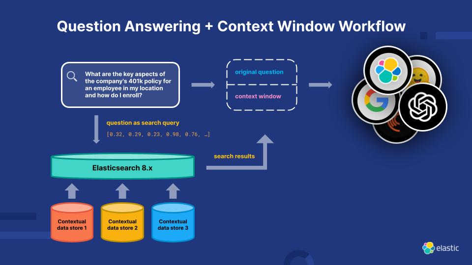

Large Language Models (LLMs) are advanced AI models designed to understand, generate, and interact with human language. These models are typically based on transformer architecture and are trained on massive datasets, allowing them to generate text, answer questions, translate languages, and perform various language-related tasks.
Key Concepts in Large Language Models
- Transformer Architecture: The underlying architecture used by many LLMs, which processes data in parallel and captures long-range dependencies between words.
- Training Data: LLMs are trained on vast amounts of text data sourced from books, websites, and other written content, allowing them to learn patterns in language.
- Tokens: LLMs process text as a series of tokens, which are often subword units or entire words, allowing them to generate human-like responses.
- Pre-training and Fine-tuning: LLMs are typically pre-trained on large datasets and then fine-tuned on specific tasks like question answering or summarization.
- Zero-shot and Few-shot Learning: LLMs can perform tasks they haven't been explicitly trained on, using prompts and examples to guide their performance.
Applications of LLMs
LLMs are versatile and can be applied across various fields:
- Natural Language Processing (NLP): Tasks such as text generation, summarization, and sentiment analysis.
- Conversational Agents: Powering chatbots and virtual assistants like Siri, Alexa, and ChatGPT.
- Translation: LLMs enable real-time language translation, breaking language barriers globally.
- Content Creation: LLMs can generate articles, stories, and even poetry, offering creative assistance.
- Code Generation: Advanced LLMs, like GPT-3, are capable of generating programming code from natural language prompts.
Real-World Examples of LLM Usage
- Customer Support: Companies use LLM-powered chatbots to provide instant support and handle customer queries.
- Healthcare: LLMs assist with medical records analysis, patient communication, and even diagnosing diseases from text data.
- Finance: LLMs analyze financial reports, generate investment insights, and provide customer service in the finance industry.